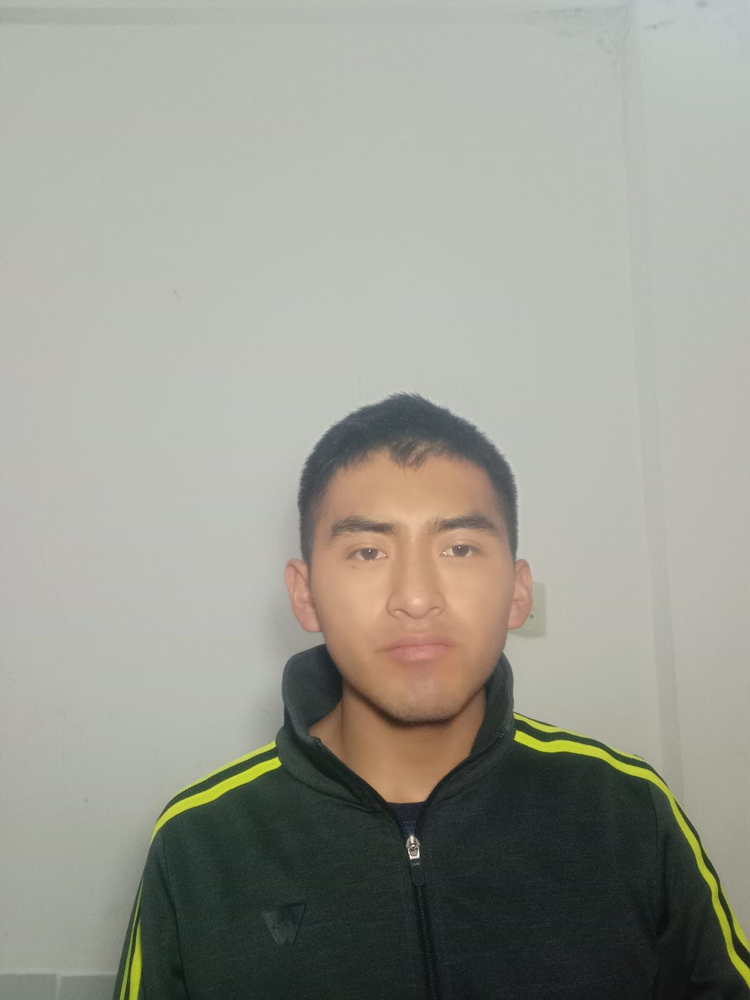

Welcome to WDD 130.

Hello, my name is Alex Codori and I'm from Bolivia. I enjoy reading books on personal development and psychology. I have a strong desire to make a difference in people's lives, which is why I'd like to learn more about software development to create a website for learning English. I also love running in the mornings and strive to stay healthy, eat well, and be disciplined. I have a deep desire to travel to Europe (Germany) or Asia (China or Japan) to learn from their level of technology and education. Asians have a lot of discipline, which is what I need to have to achieve all my goals. After learning about software development, I'd like to learn about machine learning and create an English learning app that uses AI as a mentor. Then I'd like to travel the world making a difference in people's lives.